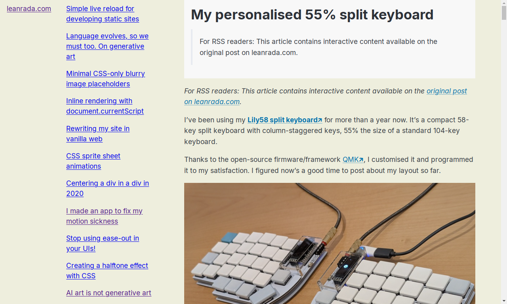
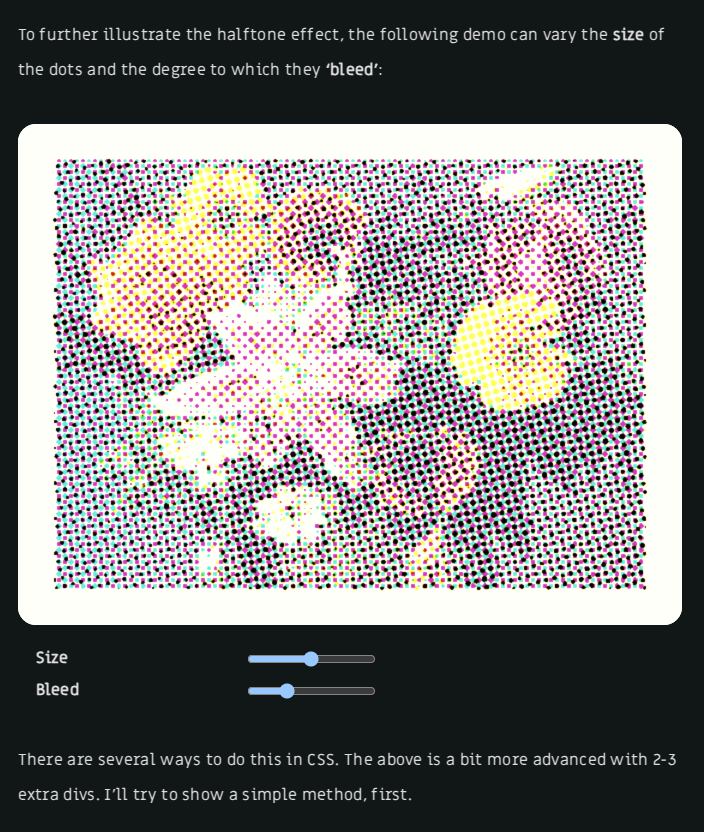
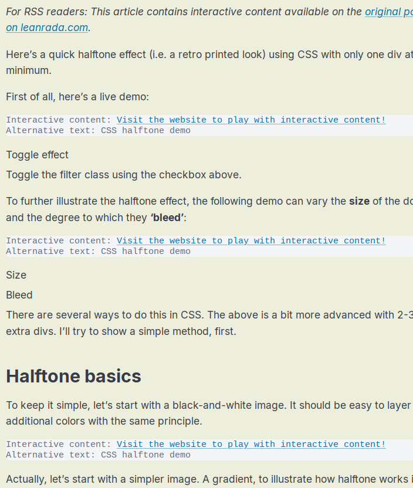
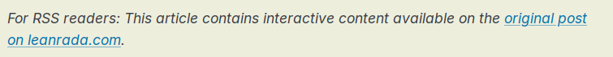

I started making my own RSS reader webapp (a what reader?). It can be accessed at /tools/rss/. Currently it’s hardcoded to just load my own site feed leanrada.com/rss.xml and that’s totally fine.
I made this primarily to test how my own posts get rendered in ‘reader mode’.
Reader mode
You see, I like to incorporate interactive elements in my posts. However, custom elements and JS are scrubbed by RSS reader apps, ultimately resulting in a clean but confusing and broken experience. Even custom CSS which I use to format some graphs and illustrations are lost.
The same could be said for the Reading mode feature offered by most full-fledged web browsers today, if not their add-ons. It’s a feature that strips ‘distracting’ elements away. My own RSS reader actually uses the same library used by Mozilla Firefox’s Reader View.

My barebones RSS reader showing a reader mode transformation of posts.
But many of my posts are not meant to be just for reading. I want my posts to be interactive and playable. A reading mode transformation is inherently incompatible. Still, I wanted to provide an RSS feed. I had to compromise.
An easy way out would be to omit the post body in the feed, maybe put in a summary instead, and just link to the original URL like what other feeds do. The BBC news feed does this, for example. But that’s boring.
An alt text kind of way
I went with an alt text kind of way. That is, all interactive content are replaced by alternative plain text in the feed body.

Original content

Converted content
Right now it’s pretty crude — my HTML to RSS converter scans custom tags in the markup, and replaces them with the tag name in sentence case. So <some-demo></some-demo> would turn into Some demo.
It also tries to look for alt and aria-label attributes if present.
It’s not really a complete solution since it doesn’t cover other stuff like plain DOM-based JS stuff (non-WebComponents). I don’t think RSS readers will start running third-party JS or WebComponents anytime soon, so this is not going to be a temporary solution either.
The idea for the RSS reader is that it will help me continuously test these conversions, and remind myself to polish the HTML to RSS solution.

Prelude prepended to the post body when there is interactive content in the post.
Beyond just a testing tool, this RSS reader is, well, an RSS reader!
It is a feed reader!
Now that I’ve made an actual RSS reader, it’d be trivial to add other feeds and use this as my main reader app! I’ve always wanted to make my own feed reader.
I’m currently using an online service InoReader to subscribe to and read around 123 feeds in total. I could potentially switch to my own reader…? I should probably start with OPML import functionality. It would be a nice project, at least.
Actually, more than a feed reader, I’ve always wanted to make my own personal front page containing not just RSS feeds, but also social media posts and other stuff I follow all in one place. So many project ideas… 🤔